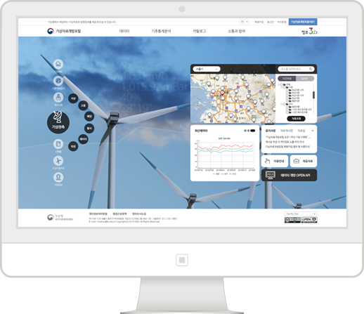

더조은 아카데미

파이썬,R 빅데이터 플랫폼 + MySQL,HTML + 머신러닝/딥러닝 오염수치 예측모델
"빅데이터!"
미래를 보아라!
-
파이썬,R
HTML,JAVA,MySQL
머신러닝,딥러닝
빅데이터 플랫폼
When,Where,Who
"상상력에는 제한이 없습니다"
빅데이터는 무한한 가능성을 가지고 있습니다
C조 빅데이터 예측모델은
다음과 같은 특징을 가지고 있습니다

날씨데이터를 한곳에서 즉시 가져갈 수 있어요
지상, 해양, 고층, 항공관측, 위성, 레이더, 수치예보모델자료 등 총 30종류의 날씨데이터를 다운로드 받을 수 있습니다.
지역과 기상요소만 기억하세요
기온, 강수량 등 찾고 싶은 지역의 날씨데이터를 지도에서 쉽게 찾을 수 있습니다.
우리나라의 100년 이상 기후통계를 알 수 있어요
기온분석, 강수량분석, 극값순위, 기후평년값, 장마, 황사일수, 폭염일수, 열대야일수, 24절기 등 18종류의 기후통계분석정보를 이해하기 쉽고 정확하게 이용하실 수 있습니다.
어떤 데이터가 있는지 궁금할 때 카탈로그를 찾아보세요
'기상기후데이터 카탈로그'는 기상청에서 제공하는 공공데이터 목록과 데이터별 상세 설명을 제공하는 서비스입니다.
데이터의 생산 및 처리과정에 대한 정보로서 데이터를 분석, 활용하기 쉽도록 데이터 카탈로그를 제공합니다.
개발자를 위한 오픈 API 서비스를 이용해보세요
반짝이는 아이디어로 날씨데이터와 다른 정보를 융·복합하여 새로운 서비스를 직접 개발할 수 있습니다.
이렇게 많은 날씨 데이터 어디에 쓰이나요?
- 날씨가 상품 매출에 미치는 영향을 분석할 때
- 인체에 날씨가 미치는 영향을 연구할 때
- 날씨에 따른 작물 성장 상태를 파학하고 싶을 때
- 작물의 파종·수확 시기를 준비해야할 때
- 에너지 사업을 계획할 때
- 건설 입지를 선정할 때
등 '기상자료개방포털'에서 찾고 있는 날씨 데이터를 자유롭게 이용할 수 있습니다.